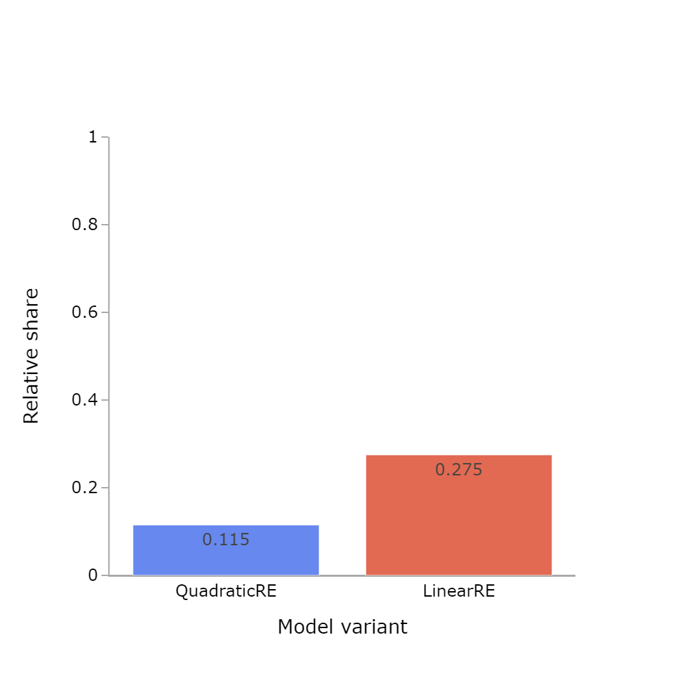
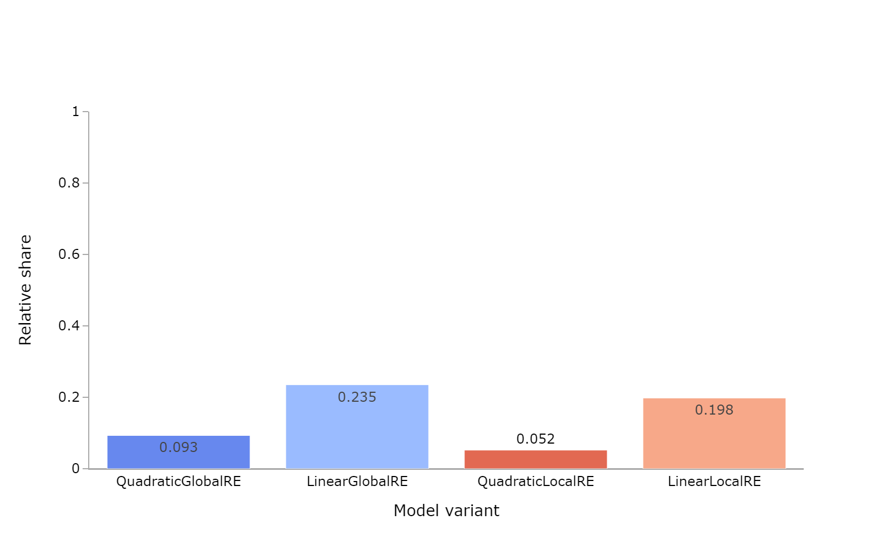
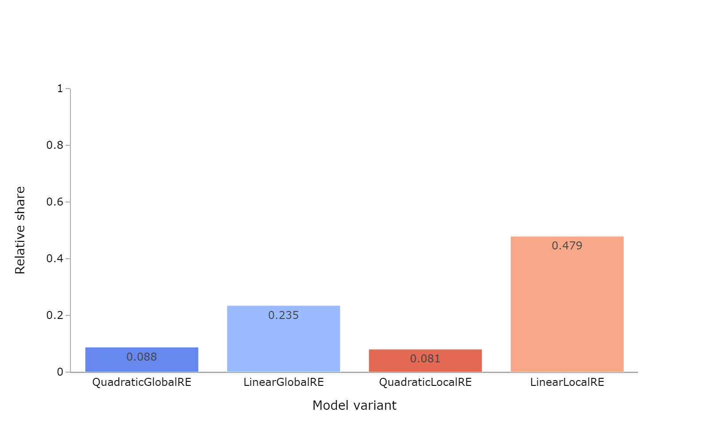
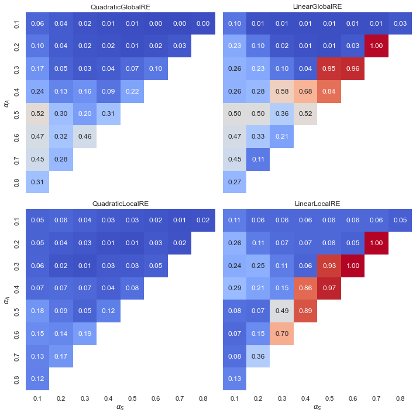

| Model | Relative share of full RE global optima | Number of full RE global optima | Number of global optima |
|---|---|---|---|
| QuadraticRE | 0.115 | 82318 | 714584 |
| LinearRE | 0.275 | 192559 | 700830 |
5 Full RE States
5.1 Background
RE is commonly understood as an account of justification, and the aspired outcomes of applying RE are equilibrium states, which are supposed to be justified according to RE.
Consequently, it is interesting to study the formal counterparts in the model that represent, or at least approximate, equilibrium states: full RE states. A theory-commitment-pair \((\mathcal{C}, \mathcal{T})\) is a full RE state if and only if they live up to very high standards, namely,
- if it is a global optimum according to the achievement function and
- the theory \(\mathcal{T}\) fully and exlusively accounts for the commitments \(\mathcal{C}\).
The second criterion amounts to the requirement that every commitment and no other sentence of the sentence pool is derivable from the theory, given the arguments of the dialectical structure in the background.
An RE model is not required to yield a full RE state in every case. However, from the viewpoint of model evaluation, it may still desirable to have a model that is at least somewhat likely to reach full RE states. This is especially relevant to the fixed points of locally optimizing model variants, which have a severely restricted set of options at every adjustment step.
Still, whether the attainment of full RE states is important, will depend on the objectives pursued with a specific application of RE (or formal models thereof). If, for example, the objective is making up one’s mind, gaining understanding of a subject matter, or if we take justification to come in degrees rather than being a yes-or-no matter, less than full RE states may be completely satisfactory outcomes.
Note that both fixed points and global optima can qualify as a full RE states. Hence, we present the results for global optima and fixed points separately. For the latter, we distinguish again between the result and the process perspective.
5.2 Results
Note
The results of this chapter can be reproduced with the Jupyter notebook located here.
5.2.1 Overall Results
5.2.1.1 Global Optima

Observations
- The relative share of full RE states among global optima is substantially higher for linear model variants than for quadratic models (Figure 5.1).
- The small differences in Table 5.1 between semi-globally optimizing model variants and their globally optimizing counterparts are but an artifact of the model implementation. They can be explained by differences in interrupted model runs (see Section 3.2).
5.2.1.2 Fixed Points
| Model | Relative share of full RE fixed points | Number of full RE fixed points | Number of fixed points |
|---|---|---|---|
| QuadraticGlobalRE | 0.093 | 42660 | 458147 |
| LinearGlobalRE | 0.235 | 73477 | 312783 |
| QuadraticLocalRE | 0.052 | 30616 | 588236 |
| LinearLocalRE | 0.198 | 45241 | 228122 |

Observations
- The relative share of full RE fixed points from the result perspective (Figure 5.2) is lower than the corresponding results for global optima (Figure 5.1). This result is unsurprising as fixed points are reached through semi-globally or locally optimizing processes, which cover a restricted search space in contrast to global optimization.1
- From the result perspective, the relative shares of full RE fixed points of quadratic model variants are substantially lower than those of their corresponding linear model variants.
| Model | Relative share of full RE fixed points | Number of full RE fixed points | Number of fixed points |
|---|---|---|---|
| QuadraticGlobalRE | 0.088 | 46644 | 528616 |
| LinearGlobalRE | 0.235 | 73492 | 313002 |
| QuadraticLocalRE | 0.081 | 162044 | 1991852 |
| LinearLocalRE | 0.479 | 623825 | 1303077 |

Observations
- The relative share of full RE fixed points (process perspective, Figure 5.3) is similar to the corresponding results from the result perspective (Figure 5.2) for
QuadraticGlobalRE,LinearGlobalRE, andQuadraticLocalREexcept forLinearLocalRE. - For
LinearLocalRE, the relative share of full RE fixed points is significantly higher when considering the fixed points from all branches (process perspective) rather than the set of fixed points (result perspective). This means that a relatively higher share of branches leads to full RE fixed points than to non-full-RE fixed points. - The relative share of full RE fixed points for
LinearLocalRE(Figure 5.3) even exceeds the relative share of full RE global optima for linear model variants (Figure 5.1). - The number of fixed points in the process perspective (Table 5.3) is only slightly higher than the number in the result perspective (Table 5.2) for
QuadraticGlobalREandLinearGlobalRE. In contrast, the number of fixed points from all branches is substantially higher than the number of fixed points from the result perspective forQuadraticLocalRE, and even more so forLinearLocalRE.
5.2.2 Results Grouped by Sentence Pool Size


Observations
- The relative share of full RE states among global optima decreases with increasing sentence-pool size for all model variants (Figure 5.4).
- The relative share of full RE states among the set of fixed points (result perspective) decreases with increasing sentence-pool size for all model variants (Figure 5.5).
- The relative share of full RE states among the fixed points from all branches (process perspective) decreases with increasing sentence-pool size for the model variants
QuadraticLocalRE,QuadraticGlobalREandLinearGlobalRE(Figure 5.6). - The relative share of full RE states among fixed points from all branches (process perspective) is roughly constant with respect to sentence pool sizes for
LinearLocalRE(Figure 5.6).
5.2.3 Results Grouped by Configuration of Weights

Observations
- Linear model variants exhibit a “tipping line” (see Appendix A). For \(\alpha_{A} > \alpha_{F}\), the relative share of full RE global optima is 1.0, i.e., all global optima are full RE states.
- Quadratic model variants have a smooth transition between low and high relative shares and have a “hotspot” for very high values of \(\alpha_{A}\). This result is made plausible by the fact that full RE states require a maximal value for the measure of account (i.e., \(A(\mathcal{C}, \mathcal{T}) = 1)\). High values for \(\alpha_{A}\) benefit the fulfilment of this requirement.


Observations
- Linear model variants do not exhibit the tipping line for fixed points (Figure 5.8 and Figure 5.9)
- Linear model variants have high relative shares for low faithfulness, moderate account and high (but non-extreme) weights for systematicity.
- There are only small differences between the relative share of full RE states among sets of fixed points (result perspective, Figure 5.8) and fixed points from all branches (process perspective, Figure 5.9).
QuadraticGlobalREexhibits its highest relative shares of full RE fixed points for moderately high values for \(\alpha_{A}\) and very low values for \(\alpha_{S}\).
5.3 Conclusion
Overall, the relative share of full RE states among global optima and fixed points is not overwhelming. However, heatmaps reveal combinations of weights for QuadraticGlobalRE, LinearGlobalRE and LinearLocalRE, where the relative share of full RE states among the outputs is acceptable. For QuadraticLocalRE, this holds at least for global optima. However, this is not a strong reason to reject QuadraticLocalRE. Depending on the particular goals of an RE inquiry, a low relative share of full RE states can be seen as a strength of a model, as it may not be desirable to render everything into a full RE state, or states satisfying less demanding requirements may be acceptable.
Concerning the influence of the sentence pool size, there is a negative trend for the relative shares of full RE states among global optima and fixed points (result perspective). Only the relative share of full RE fixed points (process perspective) of the LinearLocalRE model is not affected by the sentence pool size. At this point, we cannot offer an explanation for this behaviour, which calls for further analysis.
For the difference between result and process perspective, see Section 4.1.↩︎